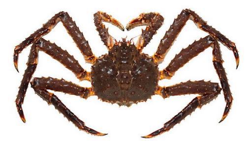

Камчатский краб на самом деле является раком, но получил свое название в силу внешнего сходства с крабами. В его имени ясно обозначен также ареал обитания. Отличается он по короткой пятой паре ног, спрятанной под панцирем. Также у самок камчатского краба брюшко имеет асимметричную форму и хитиновые щитки. Прямым родственником этого вида рака являются раки-отшельники, вместе с которыми они относятся к семейству крабоидов. Изначально это членистоногое имело раковину, и пятая пара ног была ему нужна для ее удержания. Но в процессе эволюции раковина стала не нужна, а пятая пара ног осталась. Но и оейчас она имеет практическое значение, используется для очистки жабр.
Камчатского краба не зря называют королевским. Он имеет крупные размеры, в ширину может достигать почти 30 см, а длина конечностей доходит до полутора метров. На теле можно выделить две части - головогрудь, защищенную панцирем, и брюшко. Глаза тоже находятся под защитой, над ними нависает клюв. К панцирю крепятся мышцы, благодаря которым краб двигается. Тут же сбоку расположены жабры. Нервная система краба находится в нижней стороне тела. В его передней части расположены чувствительные антенны, которые позволяют искать пищу и сортировать ее. У краба есть также сердце и желудок, которые закрывают три пары щитов. Они острые и прекрасно защищают эти важные органы. Масса тела у самца может достигать 7 килограмм, у самок вес примерно вдвое меньше. Если рассмотреть брюшко, можно увидеть там пластины и микроножки. Их расположение говорит о том, что животное произошло от спиралеобразных членистоногих и потом видоизменилось в процессе эволюции.